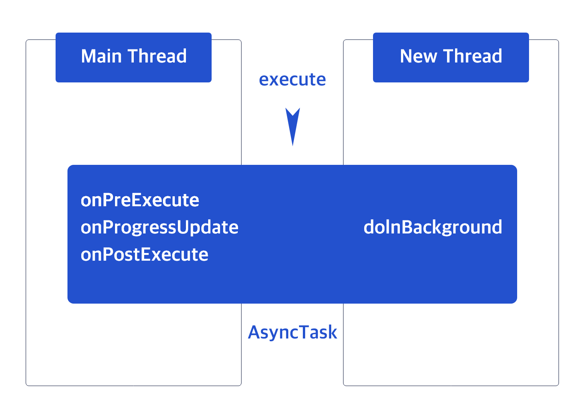

쓰레드핸들러#3
| Dates | |
|---|---|
| Topic | Android |
| Type | 📕study |
AsyncTask 사용하기
쓰레드핸들러#2 부분의 코드를 보면 코드가 많이 복잡하다.
또한 코드가 순서대로 실행된다기보다 는 순서 없이 이곳저곳에서 실행되는 느낌도 들 수 있다.
핸들러를 사용하지 않고서 좀 더 간단하게 작업하는 방법도 있다.
- AsyncTask 클래스를 상속하여 새로운 클래스를 만들면 그 안에 스레드를 위한 코드와 UI 접근 코드를 한꺼번에 넣을 수 있다.
- 따라서 스레드로 처리해야 하는 코드를 하나의 AsyncTask 클래스로 정의할 수 있다는 장점이 생긴다.
- 예를 들어, 웹서버에서 고객 이름을 가져오는 작업과 웹서버에서 제품이름을 가져오는 작업을 서로 다른 코드로 분리시키고 싶다면 두 개의 AsyncTask 상속 클래스를 만든후 각각의 코드를 넣으면 된다.
- AsyncTask 객체를 만들고 execute() 메서드를 실행하면 이 객체는 정의된 백그라운드 작업을 수행하고 필요한 경우에 그 결과를 메인 스레드에서 실행하므로 UI 객체에 접근하는 데 문제가 없다.
 AsyncTask를 이용한 작업 수행 방식
{kind=link}
- AsyncTask 클래스를 상속하여 새로운 클래스를 정의하면 그 내부에서 필요한 경우마다 콜백 메서드들이 자동으로 호출된다.
- doInBackground() 메서드에는 새로 만들어진 스레드에서 실행되어야 할 코드들을 넣을 수 있다.
- 즉, 스레드에서 동작하는 것이다.
- onPreExecute(), onProgressUpdate, onPostExecute() 메서드는 새로 만든 스레드가 아닌 메인 스레드에서 실행된다.
- 따라서 UI 객체에 자유롭게 접근할 수 있다.
- 결국 하나의 클래스 안에 스레드에서 동작해야 하는 작업과 그 작업의 결과를 UI 객체에 반영하는 코드를 같이 구현할 수 있다.
- 따라서 스레드로 수행해야할 어떤 기능을 하나의 클래스만으로 만들 수 있다는 장점이 있다.
AsyncTask에 정의된 주요 메서드들에 대한 상세한 설명은 다음과 같다.🙄
{kind=link}
- AsyncsTask 객체의 cancel() 메서드를 호출하면 작업을 취소할 수 있는데, 이 메서드로 작업을 취소했을 때는 onCancelled() 메서드가 호출된다.
- 작업의 진행 상황을 확인하고 싶을 때는 AsyncTask 객체의 getStatus() 메서드를 사용할 수 있다.
- 이 메서드를 호출했을 때 반환되는 AsyncTask.Status 객체는 상태를 표현하고 있으며, 각각의 상태는 PENDING, RUNNING, FINISHED로 구분된다.
- 상수의 이름을 보면 쉽게 알 수 있듯이 PENDING은 작업이 아직 시작되지 않았다는 것을 의미
- RUNNING은 실행중, FINISHED는 종료되었음을 의미한다.
이 화면의 버튼을 클릭하면 별도의 스레드에서 값을 1씩 증가 시키도록 하였다.
100밀리 초마다 한 번씩 값을 증가시키므로 프로그레스바의 최대값으로 지정된 100이 될때까지 10초가 걸리게 된다. → AsyncTask를 사용해 백그라운드 작업을 수행하는 메인 액티비티읰 코드
{kind=link}
MainActivity.java
public class MainActivity extends AppCompatActivity {
BackgroundTask task;
int value;
ProgressBar progressBar;
@Override
protected void onCreate(Bundle savedInstanceState) {
super.onCreate(savedInstanceState);
setContentView(R.layout.activity_main);
progressBar = findViewById(R.id.progressBar);
Button button = findViewById(R.id.button);
button.setOnClickListener(new View.OnClickListener() {
@Override
public void onClick(View v) {
// Task 객체 만들어 실행하기
task = new BackgroundTask();
task.execute();
}
});
Button button2 = findViewById(R.id.button2);
button2.setOnClickListener(new View.OnClickListener() {
@Override
public void onClick(View v) {
task.cancel(true);
}
});
}
class BackgroundTask extends AsyncTask<Integer, Integer, Integer> {
protected void onPreExecute() {
value = 0;
progressBar.setProgress(value);
}
// 태스크 객체 안에서 백그라운드 작업 수행하도록 하기
protected Integer doInBackground(Integer ... values) {
while (isCancelled() == false) {
value++;
if (value >= 100) {
break;
} else {
publishProgress(value);
// onProgress 자동 호출
}
try {
Thread.sleep(100);
} catch (InterruptedException ex) {}
}
return value;
// 다끝난후 onPostExecute 호출
}
protected void onProgressUpdate(Integer ... values) {
progressBar.setProgress(values[0].intValue());
}
protected void onPostExecute(Integer result) {
progressBar.setProgress(0);
}
protected void onCancelled() {
progressBar.setProgress(0);
}
}
}- 백그라운드 작업을 수행할 클래스는 BackgroundTask라는 이름의 클래스로 정의하고 AsyncTask 클래스를 상속받는다.
- 이 클래스는 추상 클래스이므로 새로 정의한 클래스에서는 필요한 메서드를 다시 정의하여 사용한다.
AsyncTask<Integer, Integer, Integer>- 그런데 AsyncTask 클래스를 상속하는 코드를 보면 < 기호와 > 기호 안에 세개의 자료형이 명시되어 있다.
- 이 자료형은 이 클래스를 상속하면서 재정의할 새로운 클래스의 메서드가 어떤 자료형의 파라미터를 가질 것인지를 알려주는 역활을 한다.
- 구체적으로 <기호와> 기호 안에 명시한 자료형은 그 순서에 따라 각각 doInBackground() 메서드의 파라미터, onProgessUpdate() 메서드의 파라미터, onPostExecute() 메서드의 파라미터를 결정한다.
- 예를들어,
- <기호와> 기호의 첫 번째 자료형을 Integer로 명시할시 doInBackground() 메서드의 파라미터는 Integer ... values로 자동 입력된다.
- 먼저 onPreExecute() 메서드는 초기화 단계에서 사용되므로 값을 저장하기 위해 메인 액티비티에 정의한 value 변수의 값을 0으로 초기화하고 프로그레스바의 값도 0으로 만들어 준다.
- doInBackground() 메서드는 주된 작업을 실행하는 데 사용되므로 while 구문으로 value의 값을 하나씩 증가시키도록 한다.
- 루프를 빠져나오는 조건은 작업이 취소되었거나 value의 값이 100 이상일 때이므로 루프는 100번 수행된다.
- 중간 중간 진행 상태를 UI에 업데이트하도록 만들기 위해 publishProgress() 메서드를 호출한다.
- onProgressUpdate() 메서드는 doInBackground() 메서드 안에서 publishProgress() 메서드가 호출될 때마다 자동으로 호출된다.
- 이 안에서는 프로그레스바의 값을 전달된 파라미터의 값(여기서는 value 변수의 값과 동일)으로 설정한다.